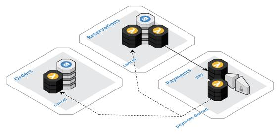

Example – order collaboration with compensation
This example, as depicted in the following diagram, demonstrates using the Saga pattern in conjunction with the Event Collaboration pattern to compensate for the interactions of multiple components when a business violation occurs. The example builds on the example presented in the Event Collaboration pattern. The components are assembled to implement a business process for ordering a product that must be reserved in advance, such as a ticket to a play or an airline reservation. The customer completes and submits the order, and then the reservation must be confirmed, followed by charging the customer's credit card, and finally sending an email confirmation to the customer. However, in this example, the credit card charge is denied and the previous steps must be undone. The reservation and the order need to be canceled.

To highlight the compensation activity, the diagram depicts the flow starting with the triggering of the payment step after the reservation step. The dashed arrows represent the compensation flows, whereas the solid arrows are the normal flow. The Payments component is implemented following the External Service Gateway pattern. A webhook is registered to consume events from the external service. The component publishes a payment-denied event when it is notified by the external system that the charge was unsuccessfully processed.
In this specific example, it is assumed that all steps can be compensated in parallel. The payment-denied event has been published and all interested components will react to this single event. Both the Orders and Reservations components implement a stream processor that consumes the payment-denied event. The Reservations component removes the reservation and the Orders component sets the status of the order to canceled. The payment-denied event contains the context information, which identifies the specific reservation and order that must be updated. Although not depicted, the Reservations component will publish a reservation-canceled event and the Orders component will emit an order-canceled event.
As an alternative compensation flow, if the reservation needed to be canceled before the order, then the Orders component would consume the reservation-canceled event, instead of the payment-denied event. This highlights that the components are coupled based on the event types when using the Event Collaboration pattern. This simple variation in the flow requires a change to the Orders component. This is not the case in the next example that is based on the Event Orchestration pattern.